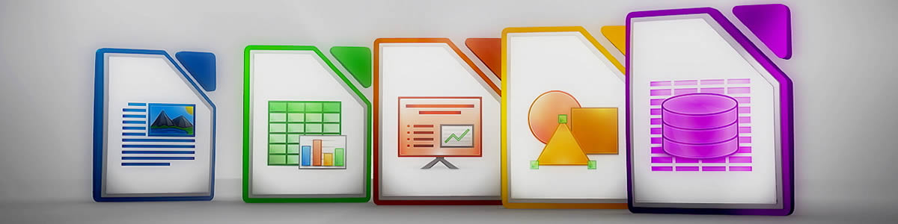

LOGO

LibreOffice es una poderosa suite de oficina; su interfaz limpia y sus potentes herramientas permiten dar rienda suelta a tu creatividad y hacer crecer tu productividad. LibreOffice incorpora varias aplicaciones que lo convierten en la más potente suite de oficina Libre y de Código Abierto del mercado: Writer, el procesador de textos, Calc, la hoja de cálculos, Impress, el editor de presentaciones, Draw, nuestra aplicación de dibujo y diagramas de flujo, Base, nuestra base de datos e interfaz con otras bases de datos, y Math para la edición de fórmulas matemática.
Tus documentos tendrán un aspecto profesional y limpio, con independencia de su finalidad: una carta, una tesis de maestría, un folleto, informes financieros, presentaciones de marketing, dibujos técnicos y diagramas.
LibreOffice es compatible con muchos formatos de documento tales como Microsoft® Word, Excel, PowerPoint y Publisher. Pero LibreOffice va más allá al permitir utilizar un moderno estándar abierto, el formato OpenDocument (ODF). Con LibreOffice tienes el máximo control sobre tus datos y contenido, además de poder exportar tu trabajo en muchos formatos diferentes incluyendo PDF.
Descarga LibreOffice en tu idioma y descubre como LibreOffice puede estimular tu creatividad en el día a día!